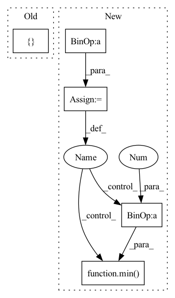

Pattern ID :1659
Before Change
in_channels = self.n_filters * (2 ** (i - 1)) if i > 0 else 3
out_channels = 2 * in_channels if i > 0 else self.n_filters
layers += [
nn.ReflectionPad2d(padding=1),
nn.Conv2d(in_channels, out_channels, kernel_size=4, stride=2),
nn.LeakyReLU(negative_slope=0.2, inplace=True)After Change
blocks = []
blocks += [nn.Conv2d(3, dim_in, 3, 1, 1)]
repeat_num = int(np.log2(img_size)) - 2
for _ in range(repeat_num):
dim_out = min( dim_in*2 , max_conv_dim)
blocks += [ResBlk(dim_in, dim_out, downsample=True)]
dim_in = dim_out
blocks += [nn.LeakyReLU(0.2)]In pattern: SUPERPATTERN
Frequency: 4
Non-data size: 5
Instances Fragment ID: 4324993
Project Name: avivga/overlord
Commit Name: fa020664bf0dcbd11e72953117146be2cdbc3b48
Time: 2020-05-29
Author: avivga@gmail.com
File Name: model/modules.py
M Class Name: Discriminator
N Class Name: Discriminator
M Method Name: __init__(3)
N Method Name: __init__(2)
M Parent Class: nn.Module
N Parent Class: nn.Module
M File Name: model/modules.py
N File Name: model/modules.py
M Start Line: 193
M End Line: 206
N Start Line: 81
N End Line: 103
Before Change
self.config = config
layers = []
for i in range(self.config["style_encoder"]["n_layers"]):
in_channels = self.config["style_encoder"]["filters"] * (2 ** (i - 1)) if i > 0 else 3
out_channels = 2 * in_channels if i > 0 else self.config["style_encoder"]["filters"]
After Change
blocks = []
blocks += [nn.Conv2d(3, dim_in, 3, 1, 1)]
repeat_num = int(np.log2(img_size)) - 2
for _ in range(repeat_num):
dim_out = min( dim_in*2 , max_conv_dim)
blocks += [ResBlk(dim_in, dim_out, downsample=True)]
dim_in = dim_out
blocks += [nn.LeakyReLU(0.2)] Fragment ID: 4325009
Project Name: avivga/overlord
Commit Name: dffe3cb71a1c6c5500c019edf4a07d4443b84cd8
Time: 2020-05-19
Author: avivga@gmail.com
File Name: model/modules.py
M Class Name: StyleEncoder
N Class Name: StyleEncoder
M Method Name: __init__(3)
N Method Name: __init__(2)
M Parent Class: nn.Module
N Parent Class: nn.Module
M File Name: model/modules.py
N File Name: model/modules.py
M Start Line: 209
M End Line: 226
N Start Line: 130
N End Line: 155
Before Change
transpose=True, concat=True, norm=nn.BatchNorm2d, act=F.relu, dilations=[1,2,5]):
super(SharedDecoder, self).__init__()
self.up_convs = []
self.im_atts = []
self.wm_atts = []
self.mask_atts = []
After Change
self.up_mask_atts = []
dilations = [1,2,5]
start_depth = depth - shared_depth
max_filters = 512
for i in range(start_depth, depth): // depth = 5 [0,1,2,3]
ins = in_channels if i == start_depth else outs
outs = min(ins * 2, max_filters)
// Encoder convs
pooling = True if i < depth-1 else False
down_conv = DownConv(ins, outs, blocks, pooling=pooling, residual=residual, norm=norm, act=act, dilations=dilations)
self.down_convs.append(down_conv)
// Decoder convs
if i < depth - 1:
up_conv = UpConv(min( outs*2 , max_filters) , outs, blocks, residual=residual, concat=concat, norm=norm,act=F.relu, dilations=dilations)
self.up_convs.append(up_conv)
self.up_im_atts.append(ECABlock(outs))
self.up_mask_atts.append(ECABlock(outs))
Fragment ID: 4324999
Project Name: bcmi/slbr-visible-watermark-removal
Commit Name: 43e84b70895d28955496122816e50857863e5bfd
Time: 2022-01-04
Author: lj200820082007@163.com
File Name: src/networks/resunet.py
M Class Name: SharedDecoder
N Class Name: SharedBottleNeck
M Method Name: __init__(11)
N Method Name: __init__(13)
M Parent Class: nn.Module
N Parent Class: nn.Module
M File Name: src/networks/resunet.py
N File Name: src/networks/resunet.py
M Start Line: 51
M End Line: 80
N Start Line: 45
N End Line: 73
Before Change
in_channels = self.config["discriminator"]["filters"] * (2 ** (i - 1)) if i > 0 else 3
out_channels = 2 * in_channels if i > 0 else self.config["discriminator"]["filters"]
layers += [
nn.ReflectionPad2d(padding=1),
nn.Conv2d(in_channels, out_channels, kernel_size=4, stride=2),
nn.LeakyReLU(negative_slope=0.2, inplace=True)After Change
blocks = []
blocks += [nn.Conv2d(3, dim_in, 3, 1, 1)]
repeat_num = int(np.log2(img_size)) - 2
for _ in range(repeat_num):
dim_out = min( dim_in*2 , max_conv_dim)
blocks += [ResBlk(dim_in, dim_out, downsample=True)]
dim_in = dim_out
blocks += [nn.LeakyReLU(0.2)] Fragment ID: 4325015
Project Name: avivga/overlord
Commit Name: dffe3cb71a1c6c5500c019edf4a07d4443b84cd8
Time: 2020-05-19
Author: avivga@gmail.com
File Name: model/modules.py
M Class Name: Discriminator
N Class Name: Discriminator
M Method Name: __init__(3)
N Method Name: __init__(2)
M Parent Class: nn.Module
N Parent Class: nn.Module
M File Name: model/modules.py
N File Name: model/modules.py
M Start Line: 166
M End Line: 179
N Start Line: 98
N End Line: 117